One component of the project each, grouped by what they argue: cost, flexibility,
ease of development, and the fact that this is a produced show rather than a robot reading a
list. Pick the ones that fit; they are meant to be a menu. All of them are built from a single
episode,
2026-09-16-am, and from the archive totals. Everything is 600 wide as
displayed, rendered at 2x. The figure strips are 200 tall and the code strips are 250, which is
what eight legible lines of monospace needs.
Use the toggle, top right. Dark strips, mostly white email clients.
Ten claims were wrong on 2026-09-17 and are fixed. The headline that said thirteen stages over eight lines; two function names that did not exist; a credit that “covered most of” a year it covers outright; hours of audio from an invented formula; a no-repeat window of fourteen against a constant of 20; an invented pricing constant; a hand-typed request URL missing four parameters; and two cost strips converting episodes to time on two different bases.tests/test_strips.pynow checks each claim against the code or the archive, so the next one fails in CI rather than in an inbox.
Two numbers to sanity-check before these go anywhere.
The “13 years of podcast” figure from the call does not hold: $200 at the real mean of $0.2231 is 896 episodes, which is 482 days, about 16 months at two a day. The strips carry the honest number.
And the bench says 34 voices, which is what this show can cast today: brand.css carries 37 palettes and three of those are retired by ear. If the line is meant to be about the Flux catalog rather than about this show's rotation, that number should come from the product, not from here.
Still open, found while checking: the README says every episode closes by saying what it cost out loud. None of the 58 do.pricing.COST_LINEexists and is tested; nothing in the script assembly calls it.
strip-ladder.png ·
1200×400, shown at 600×200
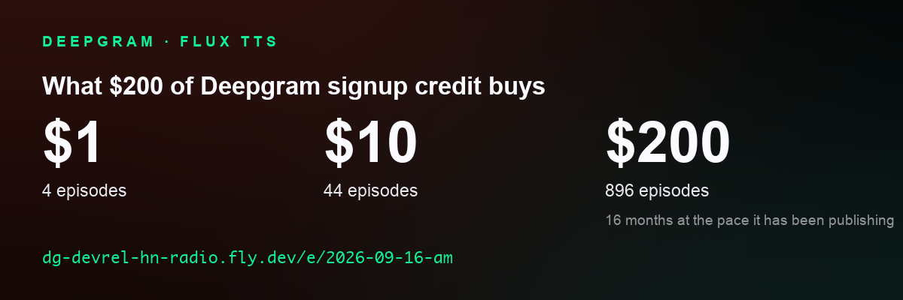
The show-and-tell ask, almost verbatim: here is what the credits you are holding actually buy. The $1 and $10 rungs exist to make the $200 one believable.
strip-receipt.png ·
1200×400, shown at 600×200
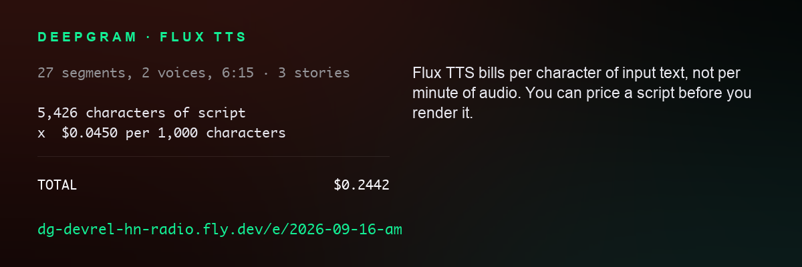
Everyone assumes voice is billed per minute of audio. Flux bills per character of input, and that difference is what lets a developer price a script before spending anything.
strip-perminute.png ·
1200×400, shown at 600×200
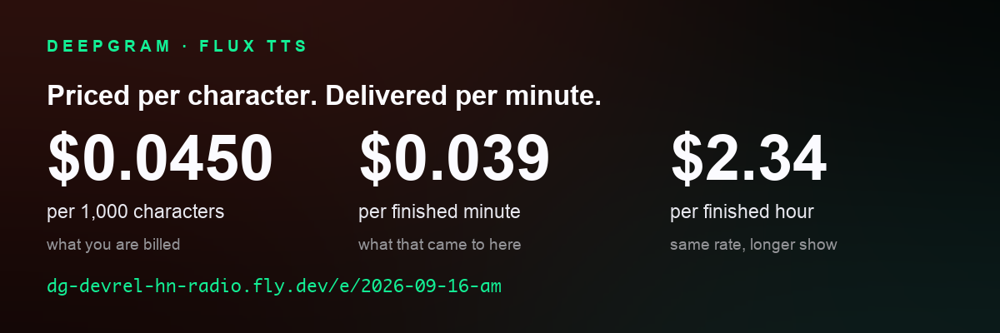
COST. The conversion nobody can do in their head: Flux quotes input characters and every competitor a reader has used quotes output minutes.
strip-yearly.png ·
1200×400, shown at 600×200
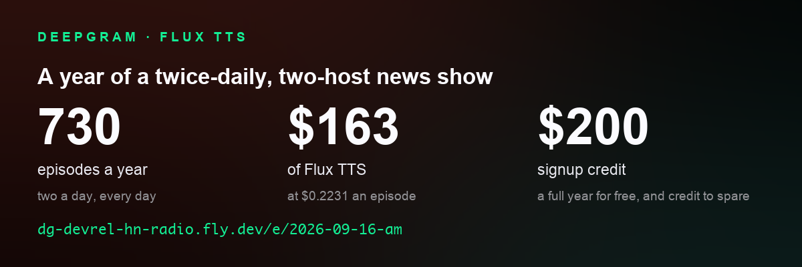
COST. 730: a full year at the schedule, two a day, which is what the crontab says and what “a year of the show” means. The ladder uses the MEASURED pace instead, because it answers a different question — how long the credit lasts, where a missed run makes it last longer. Each strip states its own basis on its face.
strip-archive.png ·
1200×400, shown at 600×200
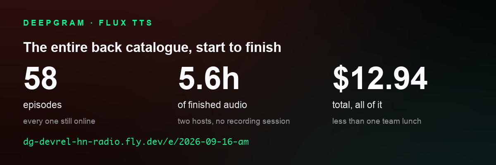
COST. Not a rate and not a projection: this is the whole catalogue a reader can go and listen to, and what all of it cost. The hours are summed from the episodes on disk, not episodes times a guess at their length.
strip-schedule.png ·
1200×400, shown at 600×200
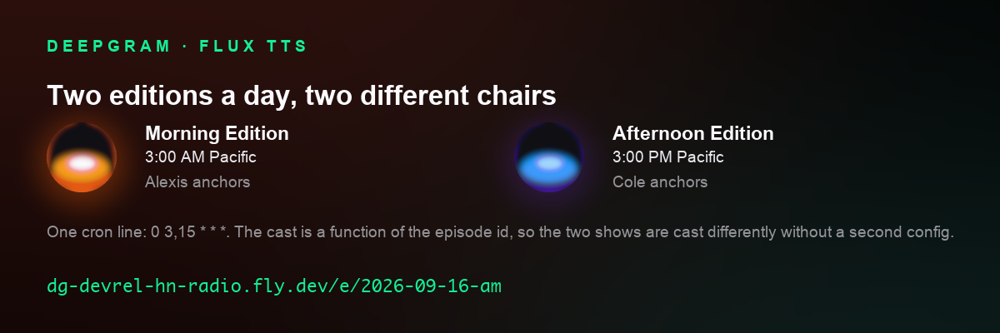
FLEXIBILITY. The same pipeline on one cron line produces two different shows, because the cast is a function of the episode id.
strip-recast.png ·
1200×400, shown at 600×200
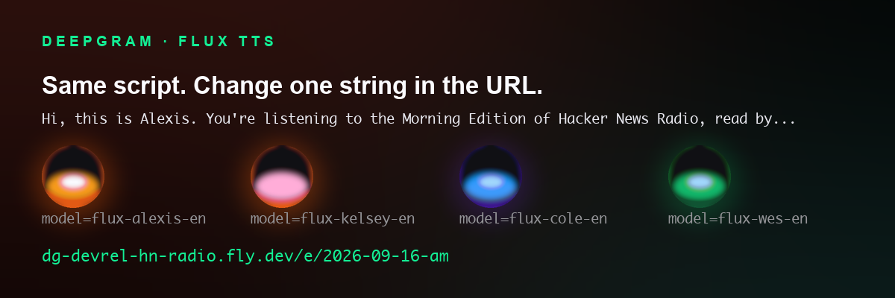
FLEXIBILITY. The point that lets a developer imagine their own version: the voice is not a model you train or a file you upload, it is a string in the URL.
strip-bench.png ·
1200×400, shown at 600×200
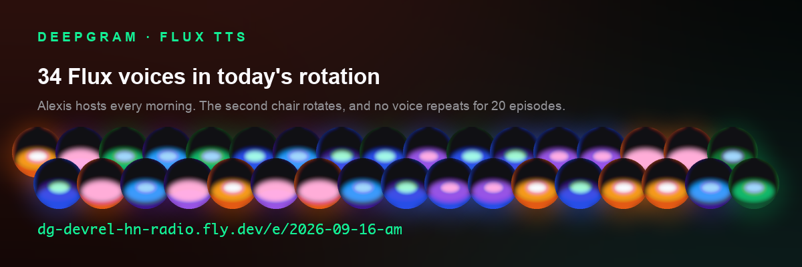
FLEXIBILITY. A reader who has heard one demo voice does not know the bench exists. The no-repeat window is read from cast.COHOST_RECENCY_WINDOW, which is 20; the strip and the README both said fourteen until 2026-09-17.
strip-apicall.png ·
1200×400, shown at 600×200
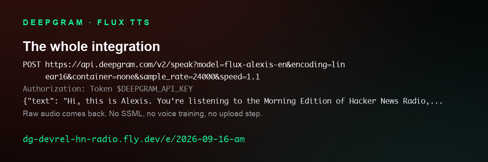
EASE. Nothing elided, nothing pseudo-code: this is the request render.py makes, with a real line of this episode in the body.
strip-textin.png ·
1200×400, shown at 600×200
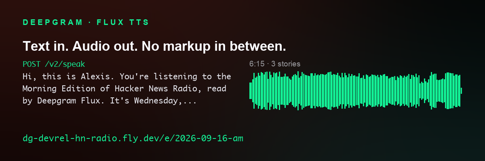
The most developer-legible claim the project has. That is a real line from this episode's script.json, which is byte-for-byte the text that was billed: no SSML, no phoneme hints, no per-word tuning.
strip-stdlib.png ·
1200×400, shown at 600×200
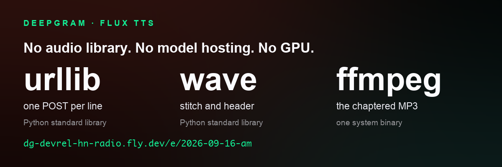
EASE. A reader deciding whether to try this is estimating how much of their week it costs. The audio path has no dependencies at all.
strip-turnmap.png ·
1200×400, shown at 600×200
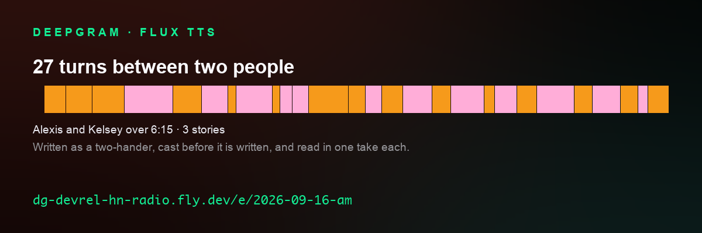
NARRATIVE. A list of features cannot show that this is a conversation. The spans are the real start times, so the rhythm here is the rhythm in the audio.
strip-castlist.png ·
1200×400, shown at 600×200
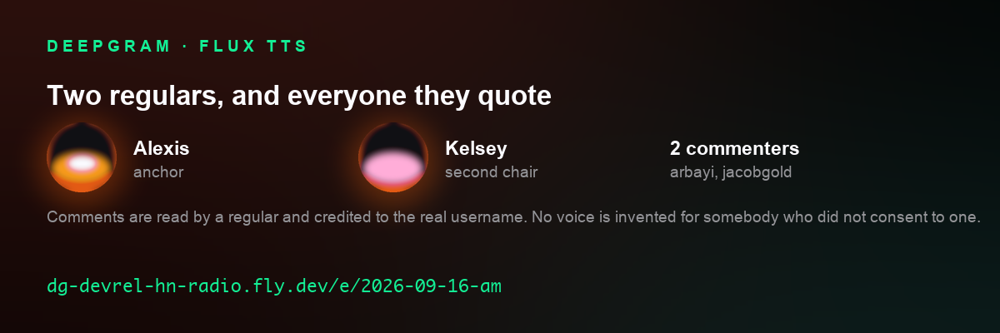
NARRATIVE. Commenters are performed by a regular and credited to their real username. An editorial decision a reader can copy, not a feature to buy.
strip-chapters.png ·
1200×400, shown at 600×200
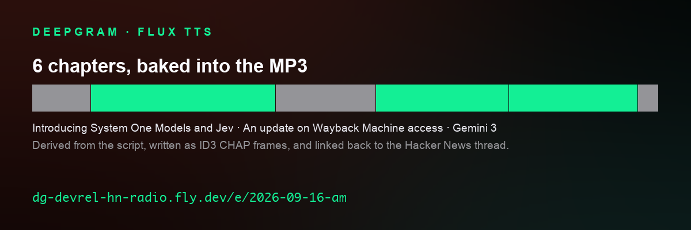
NARRATIVE. What makes a generated show behave like a produced one in Overcast and Apple Podcasts, derived from the script rather than marked by hand.
strip-latest.png ·
1200×400, shown at 600×200
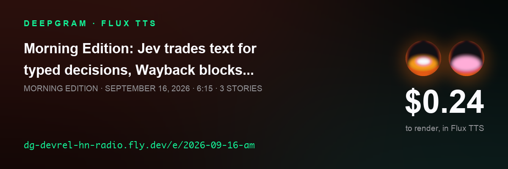
The only strip whose content changes on its own, so a weekly send can point at one URL and never update it.
strip-scoreboard.png ·
1200×400, shown at 600×200
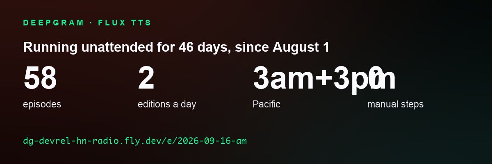
No cost on this one on purpose: the objection it answers is not “can I afford it”, it is “is this a demo somebody ran once”. The elapsed days moved into the headline, because 58 episodes beside 46 days beside 2 a day invited a division that gives 1.26.
strip-curl.png ·
1200×500, shown at 600×250
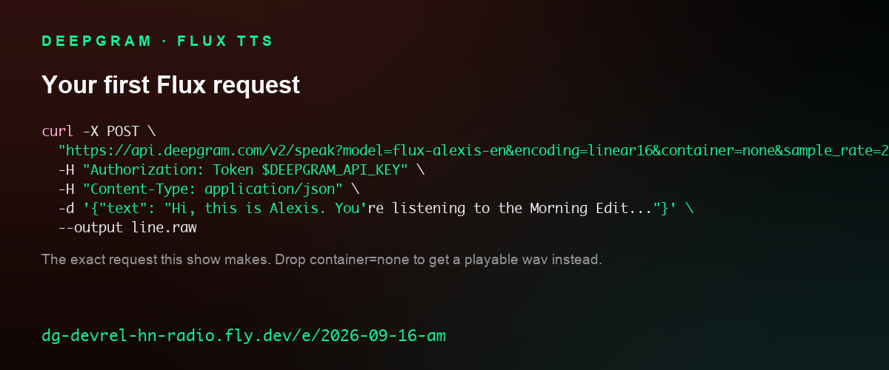
CODE. The most actionable thing that can go in a promotional email is not a description of the API, it is the command that exercises it. The URL is built by calling render._speak_url(), so it carries the four query parameters a hand-typed one lost. It outputs .raw, not .wav, because container=none returns headerless PCM.
strip-render.png ·
1200×500, shown at 600×250
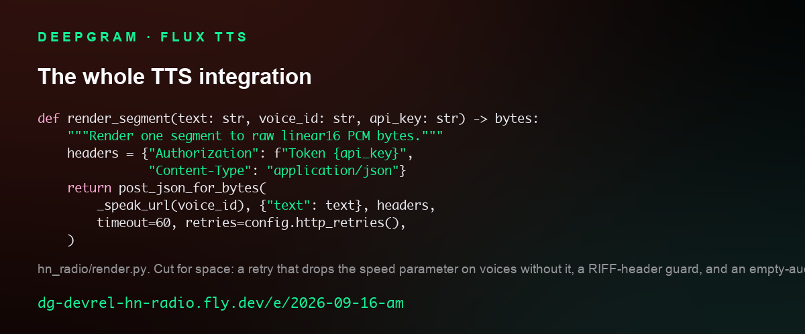
CODE. From hn_radio/render.py. Three things cut for space and named on the strip itself: the retry that drops the speed parameter on voices without it, a RIFF-header guard, and an empty-audio check. Nothing was added.
strip-price.png ·
1200×500, shown at 600×250
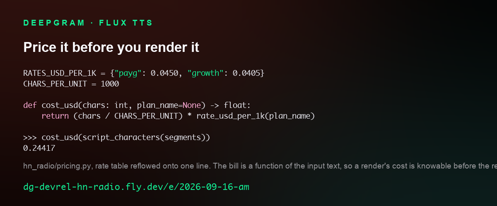
CODE. The consequence of per-character billing that people miss: the bill is a function of the input, so a render's cost is knowable before the render. You cannot do this with per-minute pricing. Real constants now; it invented RATE_USD_PER_1K, singular, until 2026-09-17.
strip-rotation.png ·
1200×500, shown at 600×250
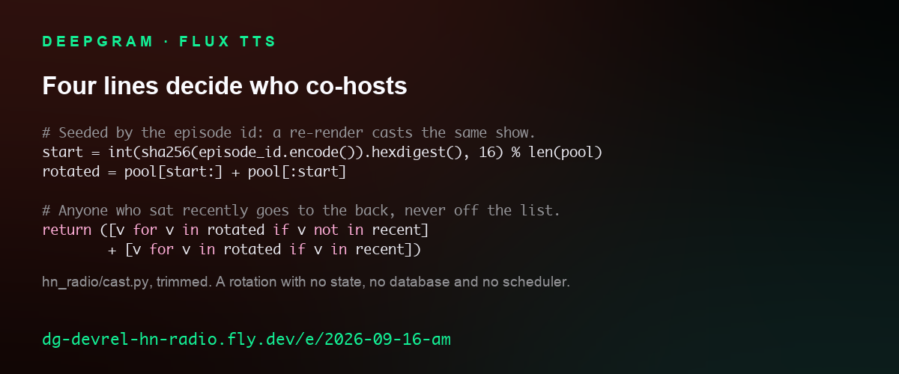
CODE. From hn_radio/cast.py, trimmed. Deterministic, so a re-render of a failed episode is the same show, and stateless, so there is no database and no scheduler behind it.
strip-pipeline.png ·
1200×500, shown at 600×250
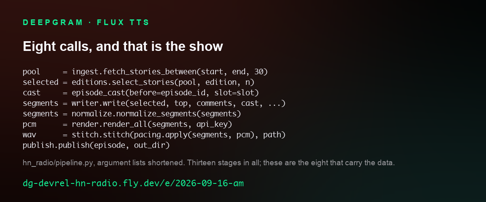
CODE. From hn_radio/pipeline.py with the argument lists shortened. It said “Thirteen stages” over eight lines until 2026-09-17, and two of the names on it did not exist. There are thirteen stages; these are the eight that carry the data, and a test now asserts every call resolves.
hn_radio/cards/tokens.py as the share cards, so a restyle moves the
strips too, and the orbs are the real per-voice palettes out of web/brand.css.pricing.py the show reads out loud in its own outro.